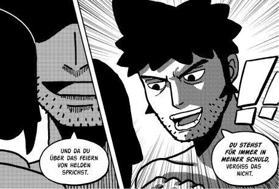
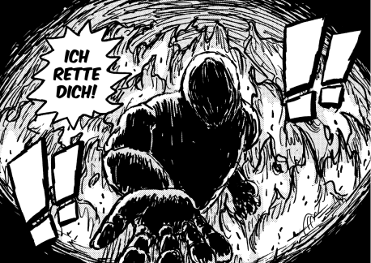
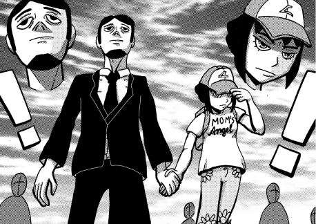
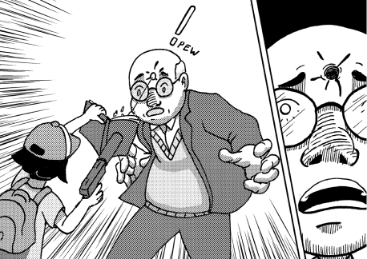
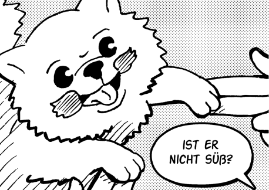
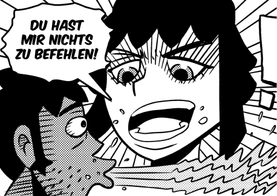
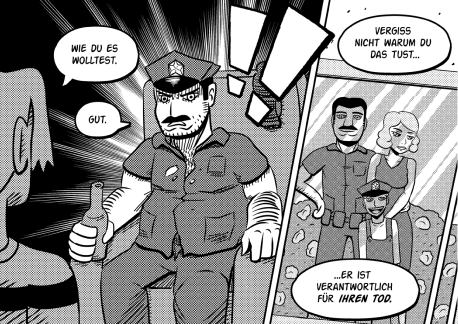

Dient nicht als Ersatz für das Lesen des ersten Teils.
KILL CONTROL ist eine Comicreihe, die letztendlich aus vier Volumes bestehen wird. Der erste Band fungiert nicht nur als Einführung der Protagonisten und ihrer Welt, sondern präsentiert auch gleichzeitig eine in sich geschlossene Handlung. Manche eingeführten Aspekte werden noch offen gelassen und in späteren Teilen beantwortet.
Die Story spielt in einer Welt, in der ein geheimes Netzwerk aus Attentätern die Gesellschaft manipuliert. In diesem sogenannten Sponsorsystem finden sich die komplett gegenteiligen Protagonisten der Story, Tom und Lana, wieder. Das einzige, was beide verbindet, ist ihr Talent zum Töten und das Dach über ihrem Kopf.
KILL CONTROL ist in erster Linie ein Charakterdrama mit Elementen aus Action und Comedy. Es erzählt eine Geschichte über moralisch fragwürdige Menschen, ohne klares Gut und Böse. Wie im echten Leben haben auch hier die Charaktere ihre dunklen Seiten, die jedoch ins Extreme überzogen sind. Die Reihe behandelt dabei ein weites Spektrum an Themen: Von Unterdrückung, Missbrauch, Trauma, psychische Gesundheit, Sucht, Manipulation, toxische Beziehungen bis hin zu Liebe, Unabhängigkeit, Familie und vieles mehr.
KILL CONTROL ist in Story Arcs unterteilt. Diese Arcs sind kleinere oder größere Handlungsbögen, welche in sich geschlossene Handlungsstränge erzählen und zusammen letztendlich die Hauptgeschichte ausmachen, ähnlich wie Kapitel in einem Roman.

Geheimes Attentäternetzwerk

Das Sponsorsystem ist ein geheimes Netzwerk aus Attentätern, welches die Gesellschaft manipuliert. Sponsorsystem wird mit SPS und Attentäter mit Atti abgekürzt. Die Comicreihe KILL CONTROL wird in Großbuchstaben geschrieben, die Gruppe Kill Control aus dem Comic, wird hingegen normal geschrieben.

Definition Sponsoring: Förderung von Personen oder Gruppen durch Geld, Sachleistung, etc. mit der Erwartung von Gegenleistungen, welche die eigenen Kommunikations- und Marketingziele unterstützt.
In diesem Fall: Das Sponsorsystem unterstützt bestehende Attentäter mit Fördermittel und Sachleistungen. Als Gegenleistung arbeiten Attentäter nun für das System, es wächst und zieht so mehr Attentäter an.
Das Sponsorsystem bildet ein Netzwerk aus Agenturen in verschiedenen Bezirken weltweit. Diese Agenturen werden von den sogenannten Sponsoren geleitet und beschäftigen in der Regel mehrere Attentäter, welche die Aufträge von Klienten ausführen. Agenturen befinden sich versteckt z. B. über einen geheimen Fahrstuhl eines Elektromarkts erreichbar.
Das System bietet zahlreiche Vorteile und Dienstleistungen an, darunter recherchierte Informationen und die Versorgung mit Waffen. Der Hauptvorteil besteht jedoch im Schutz vor anderen Attentätern, was den Attentätern eine relativ sichere Karriere ermöglicht. Im Gegenzug dazu sind die Mitglieder verpflichtet, für die Agentur zu arbeiten und den vorgegebenen Kodex zu befolgen.
Neben der Geldeinnahme strebt das SPS danach so viele Attentäter wie möglich anzuwerben um die Kontrolle über jeden beauftragten Mord der Welt zu erlangen. Mit zunehmender Kontrolle gewinnt das Sponsorsystem an Macht.
Das Sponsorsystem bildet ein Netzwerk aus Agenturen in verschiedenen Bezirken weltweit. Diese Agenturen werden von den sogenannten Sponsoren geleitet und beschäftigen in der Regel mehrere Attentäter, welche die Aufträge von Klienten ausführen. Agenturen befinden sich versteckt z. B. über einen geheimen Fahrstuhl eines Elektromarkts erreichbar.
Das System orientiert sich stark an der Hierarchie der italienischen Mafia. An der Spitze steht der sogenannte Sponsorboss mit seinen Beratern, gefolgt von der Kill Control, danach kommen die Sponsoren und ihre Untergebenen wie Attentäter.
Die Berater stellen neben dem Sponsorboss die höchste Instanz des gesamten Sponsorsystems dar. Sponsoren, die ihrem Atti zum Status der Kill Control verhelfen, steigen zum Berater auf. Diese überwachen den reibungslosen Ablauf sämtlicher Systeme innerhalb des SPS, genießen aber auch mehr Freiheiten als andere Angestellte. Über den Sponsorboss ist noch nichts bekannt.
Die Hüter des Kodexes, die Kill Control, werden aktiv, sobald eine Regel gebrochen wird. Diese Gruppe, bestehend aus den sieben besten Attentätern im SPS, exekutiert regelbrechende Attis und sichert so den versprochenen Schutzaspekt des Systems. Die Furcht vor ihnen stellt sicher, dass kein Attentäter gegen Regel 7 des Kodexes verstößt, welche das gegenseitige Töten unterbindet.

Ein Vertrag mit sieben Regeln, welche man unter keinen Umständen brechen darf – andernfalls steht der Tod bevor.
Wer eine der folgenden Regeln bricht, wird getötet.
Jedes Mitglied des Sponsorsystems muss dieses als Geheimnis wahren.
Attentäter müssen ihre ursprüngliche Identität sowie Kontakte aufgeben. Diese Regel wird für jeden neuen Identitätswechsel erneut angewendet.
Derjenige, der das Ziel ausschaltet, kriegt das Geld, unabhängig von Teambildung.
Der Pager muss zu aller Zeit bei sich getragen und dessen Funktionen genutzt werden.
Einmal im System, darf man es nicht mehr verlassen.
Attentäter dürfen sich nicht gegenseitig behindern oder attackieren.
Sponsoren fungieren als Agenturleiter und die Schnittstelle zwischen dem System und den Attentätern. Zu ihren Aufgaben gehören die Rekrutierung von Attentätern, die Entgegennahme von Klientenaufrträgen sowie die Bereitstellung von Sponsor-Dienstleistungen.
Das Cover-Up ist eine Abteilung des Systems, zuständig für die Vertuschung von Attentaten. Ihre Aufgaben umfassen die Beseitigung von gewollten oder ungewollten Leichen, die Reinigung von Tatorten sowie die Manipulation von Beweismitteln und anderen Spuren.

Der Pager dient praktisch als Arbeits-Smartphone und wird von vielen wie ein normales Mobilgerät verwendet. Die Besonderheit besteht darin, dass es mit dem SPS verbunden ist, wodurch man ständig anonym bleibt.

Jeder Attentäter ist verpflichtet, den Pager stets bei sich zu tragen, da er dessen Position verfolgt. Um sicherzustellen, dass die richtige Person lokalisiert wird, wird in Intervallen ein Code abgerufen, den nur der Pager-Besitzer kennen sollte. Dieses Gerät dient dazu, mit dem SPS in Kontakt zu treten oder auch Kodexverstöße zu melden.

Auf einer Mission werden immer mindestens drei Attentäter entsandt. Dies dient der Sicherheit, falls einer der Attis einen anderen attackiert oder tötet, damit der Dritte den Mörder melden kann. Dies geschieht mittels Pager durch den Codenamen oder ein Foto.

Daraufhin sendet das Sponsorsystem eine Codeabfrage an das vermeintliche Opfer. Wenn diese nicht bestätigt wird, ist vom Tod auszugehen. Im Hintergrund wird alles nochmal durch Lokalisierung der involvierten Personen rekreiert und kontrolliert.
Falls das Opfer überlebt, können beide sich dem Kodexbrecher stellen und ihn kampfunfähig machen, bis die Kill Control eintrifft. Denn nur sie dürfen Attentäter hinrichten.

20 Seiten

Tom und Lana wohnen zusammen in einem nicht kindgerechten Apartment in den USA. Während er sich mit Prostituierten vergnügt, ist Lana gezwungen, sich mit den übrigen Frauen in der Wohnung zu unterhalten.

Vor vier Jahren rettete Tom sie aus einem brennenden Lager und ließ sie seitdem bei sich wohnen. Nachdem Tom seine Angelegenheiten erledigt hat und die Frauen wegschickt, entwickelt sich ein Gespräch, das die Dynamik der beiden Attentäter weiter beleuchtet.
Lana kann Tom nicht ausstehen, da er ihr Freundschaften verbietet, um ihr Doppelleben zu wahren und sie nicht ernst nimmt. Tom hingegen sieht Lana als naives Kind, was für immer in seiner Schuld steht. Außerdem lautet seine Lebensphilosophie: „Vergangene Sachen sollten in der Vergangenheit ruhen.“

In derselben Nacht hat Lana einen Albtraum vom Lagerbrand und konfrontiert Tom, der sie daraufhin verarscht und von einem Monster erzählt, das denselben Brand überlebt hat. Sie wünscht sich, von Tom ernst genommen zu werden, da sie ja schließlich „böse“ Menschen tötet, doch er schnauzt sie nur an.
27 Seiten
Durch einen unscheinbaren Elektronikmarkt gelangen Tom und Lana in die unterirdische Agentur ihres Sponsors. Dieser informiert sie über ihre bevorstehende Mission, wobei der Sponsor mehr Interesse an ihnen hat als sie an ihm.

Auf der Mission geben sich Tom und Lana als Vater und Tochter aus, die einen Ausflug in eine Bücherei machen. Dort befindet sich ihre Zielperson mit seinem Kind.
Trotz zahlreicher Missverständnisse und Planänderungen schafft es Lana, die Zielperson unauffällig zu beseitigen und den Verdacht auf den eigenen Sohn zu lenken. Mit der Hilfe eines Sponsorcops gelingt beiden die Flucht. Obwohl sie sich privat oft in die Haare kriegen, sind sie auf Missionen ein starkes Team.
14 Seiten
Trotz guter Schulleistungen wird Lana in der Schule gemobbt. Tom meint, dass es für Attentäter üblich ist, einsam zu sein, also adoptiert Lana den Hund Shishiwauwau aus einer Tierhandlung, um dagegen vorzugehen.
Lana und Shishi gehen spazieren und treffen zufälligerweise auf ihren Mitschüler Conner. Sie kommen ins Gespräch über ihre strengen Eltern und er spornt Lana an, gegen Tom zu rebellieren.

Am selben Abend schwärmt Lana von ihm vor Tom, der weitere Treffen zwischen ihnen verbietet, da er ihn verdächtig findet. Erinnert an Conners Worte, stellt sich Lana gegen Tom und geht in ihr Zimmer.
Es stellt sich heraus, dass Conner der Sohn eines Polizisten ist, der das alles eingefädelt hat, um seine verstorbene Frau zu rächen.

… und willst wissen, wie die Story weiter geht? Dann hol dir jetzt das Sequel!